Perosnajes Principales y Secundarios
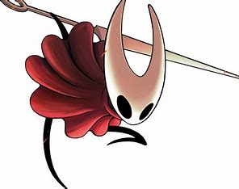
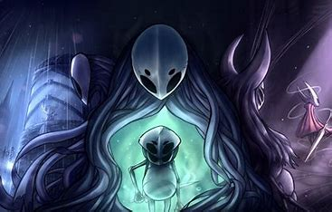
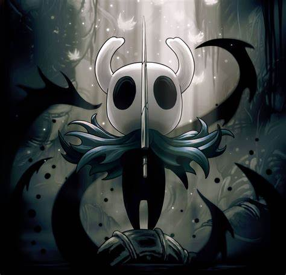
- El caballero:Protagonista silencioso.
- Hornet:Guardian agil, futura de Silksong.
- Zote:Guerrero comico y egocentrico.
- Los Soñadores:Monomon, Herrah y Lurien.
Zonas del Juego
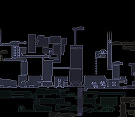
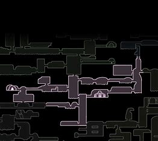
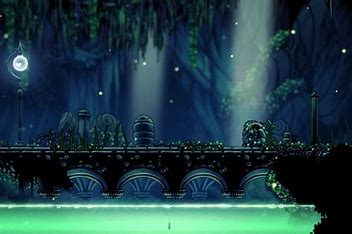
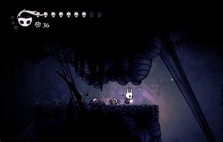
- Greenpath
- ciudad de las Lagrimas
- Pico de Cristal
- Nido Profundo
- Cañon Nublado
Enemigos y Jefes Importantes
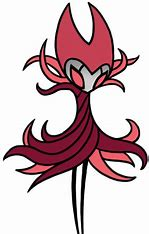
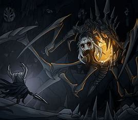
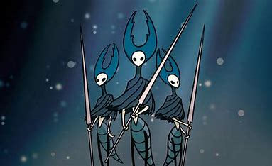
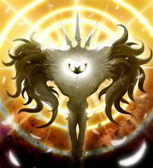
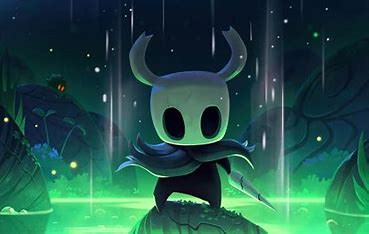
- Radiance:Entidad y jefa final del juego.
- Hollow Knight:Portador original.
- Nightmare King Grimm:Jefe opcional y muy desafiante.
- Nosk:Criatura que adopta tu forma.
- Mantis Lords:Desafio honorable en Greenpath.